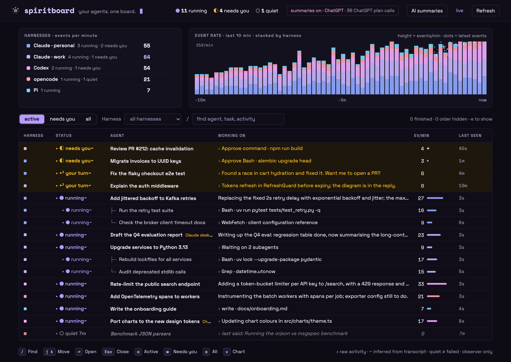

<!doctype html>
<html lang="en">
<meta charset="utf-8">
<title>Spiritboard · social preview</title>
<style>
@font-face { font-family: Space; src: url('../../src/spiritboard/static/fonts/space-grotesk.woff2'); }
@font-face { font-family: Mono; src: url('../../src/spiritboard/static/fonts/space-mono-700.woff2'); font-weight: 700; }
* { box-sizing: border-box; }
html, body { margin: 0; width: 1280px; height: 640px; overflow: hidden; }
body { background: #0d0b14; color: #ece8f6; font-family: Space, sans-serif; }
body::before { content: ''; position: absolute; inset: 0; background: radial-gradient(ellipse at 90% 0%, #36204c 0%, transparent 60%); }
main { position: relative; padding: 48px 56px; height: 100%; display: flex; gap: 38px; align-items: center; }
.copy { flex: 0 0 535px; }
.brand { display: flex; align-items: center; gap: 16px; font: 700 36px Mono, monospace; letter-spacing: -1.8px; color: #d6c8ff; }
.brand img { width: 53px; height: 53px; }
h1 { font-size: 64px; line-height: 1.04; font-weight: 600; letter-spacing: -2.5px; margin: 40px 0 22px; }
h1 span { color: #b79cff; }
p { font-size: 21px; line-height: 1.5; color: #bdb5d0; margin: 0; max-width: 475px; }
.install { display: inline-flex; align-items: center; gap: 16px; margin-top: 34px; border: 1px solid #5b427f; padding: 16px 21px; border-radius: 9px; background: #171126; font: 700 21px Mono, monospace; color: #e6dcff; }
.install span { color: #b79cff; }
.foot { margin-top: 25px; font-size: 14px; letter-spacing: .06em; color: #9a93ad; }
.screen { width: 638px; flex-shrink: 0; padding: 9px; background: #1d1630; border: 1px solid #4d3c68; border-radius: 13px; box-shadow: 0 26px 80px #0009; transform: rotate(-2deg); }
.screen img { display: block; width: 618px; border-radius: 7px; }
.caption { color: #9a93ad; font-size: 12px; padding: 10px 5px 2px; letter-spacing: .06em; }
</style>
<main>
  <section class="copy">
    <div class="brand">spiritboard</div>
    <h1>Your agents.<br><span>One board.</span></h1>
    <p>A local, read-only dashboard for coding agents, across harnesses and accounts.</p>
    <div class="install"><span>❯</span> uvx spiritboard</div>
    <div class="foot">OPEN SOURCE · LOCAL FIRST · PYTHON</div>
  </section>
  <section class="screen" aria-label="Existing synthetic dashboard example">
    
    <div class="caption">SYNTHETIC EXAMPLE · NO REAL SESSION DATA</div>
  </section>
</main>
</html>
